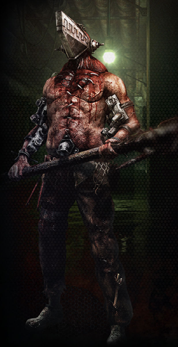

The Butcher

- Steel Behemoth (Passive) - Immunity to occupation, redirection, bleeding, poison and death at night.
- Unwarranted Provocation (Day - 2 Uses) Force target player to target you tonight
- Butcher’s Wrath (Day - 2 Uses after N3) Bypass any redirection or life immunity tonight
- "Self Defense" (Night - Infinite uses) Kill any players that target you tonight
- Hidden Nightmare (Night - Infinite uses after N3) Chose target player, kill all that target/defend them
- Possible ability: Meet Your Maker (Night - Infinite uses after N3) Only usable while jailed. If you were jailed and the Prince does not execute you, you may kill the Prince.
- Idea was from Shrimpy and I honestly like the concept
Win Condition - Take down any who stand in your way
Strategy
I would suggest imitating either a drunk or a butler. I haven’t quite thought of a strategy to take out the prince but definitely use the Unseen/Cult to your advantage; Anyone they poison/bleed is your target for attempted mass murder
I have been thinking of a change for his Butcher’s Wrath to make it so he also kills who he targets that night as a way to take out the prince and whatnot.
Let me know what you think